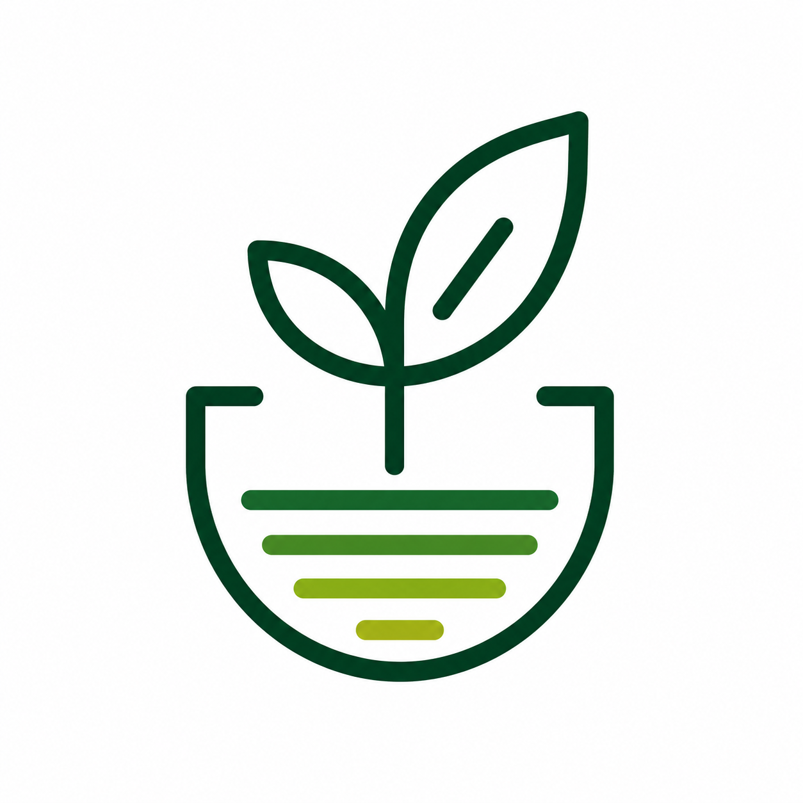

DISEÑA • CREA • TRANSFORMA • NUTRE
Integrando impresión 3D, hidroponía, sostenibilidad y economía circular para construir soluciones accesibles y con impacto real.
Conocé nuestra visiónRAIZ 3D es un proyecto que nace de la unión entre la tecnología, la creatividad y la sostenibilidad.
Nuestro objetivo es explorar y desarrollar soluciones que integren impresión 3D, hidroponía, economía circular y aprendizaje continuo, demostrando que es posible crear valor utilizando recursos de manera inteligente y responsable.
Más que fabricar objetos, buscamos diseñar herramientas, compartir conocimiento y construir proyectos con impacto positivo para las personas y el entorno.
Diseñar y desarrollar soluciones innovadoras que integren tecnología, creatividad y sostenibilidad, promoviendo el uso responsable de los recursos y acercando herramientas accesibles que generen valor para las personas, las comunidades y el medio ambiente.
Convertirnos en un referente de innovación sostenible, impulsando proyectos que combinen fabricación digital, economía circular, educación y producción responsable, demostrando que la tecnología puede ser una herramienta para construir un futuro más consciente, accesible y regenerativo.
Uso responsable de recursos y compromiso ambiental.
Buscar nuevas formas de resolver problemas reales.
Crecer, experimentar y compartir conocimiento.
Construir junto a personas y comunidades.
Dar una nueva vida a materiales y recursos.
Generar cambios concretos que mejoren nuestro entorno.
Diseño y fabricación de piezas funcionales.
Soluciones inteligentes para cultivo sostenible.
Proyectos vinculados al reciclaje y reutilización.
Educación, aprendizaje y colaboración abierta.
Seguinos para acompañar este camino.
Instagram @raiz3d.ar